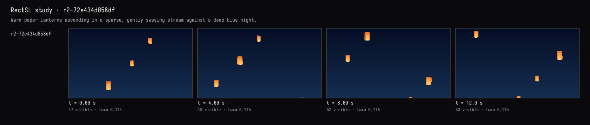

Paper lanterns
The recorded exchange: the request, the tool activity, every image the tools returned to the model, and its reply. Expand tool activity to read the steps; open an image to see it full size.
Paper lanterns drifting up a night sky, a few at a time, swaying a little as they rise, warm orange against deep blue.
Tool activity · 19 steps
Starting AI conversation
RectSLStudyGuide finished (4 ms)
InspectRectSLStudy finished (2 ms)
CaptureRenderWindowRequest finished (155 ms)
Waiting for model
Transforming syntax for looping
Transforming syntax for looping
I'm thinking that I need to focus on the syntax for group transformations during the looping phase. There must be a structured way to implement this, as it seems crucial for ensuring that each iteration runs smoothly. I'm looking to clarify these transformations to debug effectively. It feels important to address this so that I can streamline the process and improve overall performance. Let's break it down step by step to make sure it's all clear!
Next tool:
RectSLStudyGuideRectSLStudyGuide finished (2 ms)
RectSLStudyGuide finished (1 ms)
Waiting for model
Exploring loop mapping and delays
Exploring loop mapping and delays
I'm trying to figure out if I can loop a 16-second rise phase across five groups, respecting potential negative delays in the loop mapping. I’m considering using explicit group x and tracks y, with a loop phase managed by delay time after the loop. The simplest setup seems to be an 18-second group template that rises from -6 to 6, incorporating negative delays per copy. I also want to think about scaling and linear adjustments.
Next tool:
RectSLStudyGuideRectSLStudyGuide finished (2 ms)
RectSLStudyGuide finished (1 ms)
RectSLStudyGuide finished (1 ms)
Waiting for model
Planning design elements
Planning design elements
I'm working on a design project and need to allocate my time carefully to create basic yet stylized detailed rectangles. I want to form a group using a main amber color with specific values like .65 and .93 for the hue. For shoulders, I'll go for .55 and .12 at the top, and I plan to incorporate a bright gradient inset as well. The ribs should be slim with some opacity, and I need to ensure the opening measures .38 by .075 for the flame effect.
Next tool:
RectSLStudyGuideRectSLStudyGuide finished (1 ms)
EditRectSLStudy finished (954 ms)
CaptureRenderWindowRequest finished (550 ms)
Completed


Implemented and verified. The live view shows three warm orange lanterns with bright lower openings and subtle paper folds against a deep-blue, faintly starred sky.
They rise in staggered succession with gentle sway and tilt, keeping only a few visible at once. The scene runs as an 18-second loop; compilation and visual checks passed.